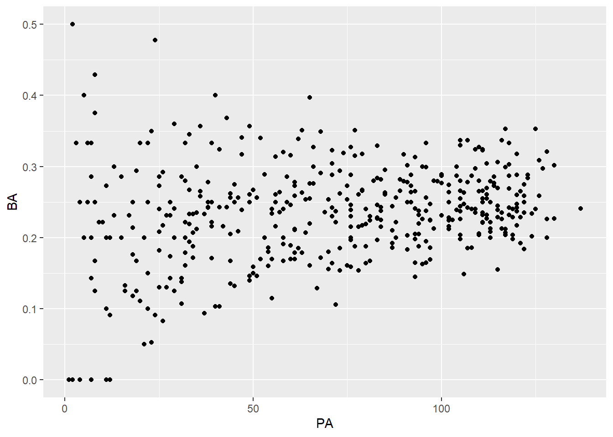
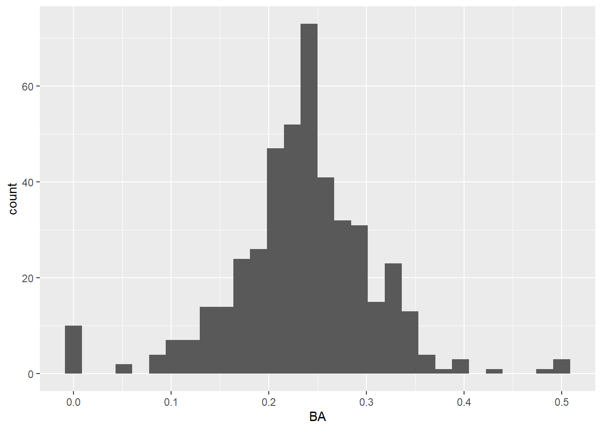

#install.packages(baseballr)
library(baseballr)
library(tidyverse)test_quarto_introbaseball
Loading baseball stats into R
One option is to use the pre-built baseballr package (https://doi.org/10.32614/CRAN.package.baseballr)
Then for example, pull some stats for the Boston Red Sox this season
most_recent_mlb_season()[1] 2026BOS = baseballr::bref_team_results("BOS", most_recent_mlb_season())
head(BOS)── MLB Team Results data from baseball-reference.com ──────── baseballr 1.6.0 ──ℹ Data updated: 2026-04-26 19:59:13 EDT# A tibble: 6 × 22
Gm Date Tm H_A Opp Result R RA Inn Record Rank GB
<dbl> <chr> <chr> <chr> <chr> <chr> <dbl> <dbl> <chr> <chr> <dbl> <chr>
1 1 Thursday,… BOS A CIN W 3 0 "" 1-0 1 Tied
2 2 Saturday,… BOS A CIN L-wo 5 6 "11" 1-1 3 1.5
3 3 Sunday, M… BOS A CIN L 2 3 "" 1-2 4 2.0
4 4 Monday, M… BOS A HOU L 1 8 "" 1-3 5 2.0
5 5 Tuesday, … BOS A HOU L 2 9 "" 1-4 5 3.0
6 6 Wednesday… BOS A HOU L 4 6 "" 1-5 5 4.0
# ℹ 10 more variables: Win <chr>, Loss <chr>, Save <chr>, Time <chr>,
# `D/N` <chr>, Attendance <dbl>, cLI <dbl>, Streak <dbl>,
# Orig_Scheduled <chr>, Year <dbl>batters_26 = baseballr::bref_daily_batter(t1= paste0(most_recent_mlb_season(),"-01-01"), t2=paste0(most_recent_mlb_season(), "-", format(Sys.Date(), "%m-%d")))
pitchers_26 = baseballr::bref_daily_pitcher(t1= paste0(most_recent_mlb_season(),"-01-01"), t2=paste0(most_recent_mlb_season(), "-", format(Sys.Date(), "%m-%d")))
BOS_batters_26 = batters_26 %>%
filter(Team == "Boston")
BOS_pitchers_26 = pitchers_26 %>%
filter(Team == "Boston")
head(BOS_batters_26)── MLB Daily Batter data from baseball-reference.com ──────── baseballr 1.6.0 ──ℹ Data updated: 2026-04-26 19:59:20 EDT# A tibble: 6 × 30
bbref_id season Name Age Level Team G PA AB R H X1B
<chr> <int> <chr> <dbl> <chr> <chr> <dbl> <dbl> <dbl> <dbl> <dbl> <dbl>
1 storytr01 2026 Trevor… 33 Maj-… Bost… 27 119 111 11 22 15
2 contrwi01 2026 Willso… 34 Maj-… Bost… 26 111 92 12 23 16
3 abreuwi02 2026 Wilyer… 27 Maj-… Bost… 26 109 101 14 30 20
4 anthoro01 2026 Roman … 22 Maj-… Bost… 22 97 80 11 18 13
5 durbica01 2026 Caleb … 26 Maj-… Bost… 25 96 85 11 14 7
6 rafaece01 2026 Ceddan… 25 Maj-… Bost… 26 93 83 12 22 17
# ℹ 18 more variables: X2B <dbl>, X3B <dbl>, HR <dbl>, RBI <dbl>, BB <dbl>,
# IBB <dbl>, uBB <dbl>, SO <dbl>, HBP <dbl>, SH <dbl>, SF <dbl>, GDP <dbl>,
# SB <dbl>, CS <dbl>, BA <dbl>, OBP <dbl>, SLG <dbl>, OPS <dbl>summary(BOS_batters_26) bbref_id season Name Age
Length:13 Min. :2026 Length:13 Min. :22.00
Class :character 1st Qu.:2026 Class :character 1st Qu.:26.00
Mode :character Median :2026 Mode :character Median :29.00
Mean :2026 Mean :28.31
3rd Qu.:2026 3rd Qu.:31.00
Max. :2026 Max. :34.00
Level Team G PA
Length:13 Length:13 Min. :11.00 Min. : 35.00
Class :character Class :character 1st Qu.:17.00 1st Qu.: 56.00
Mode :character Mode :character Median :22.00 Median : 93.00
Mean :20.62 Mean : 78.23
3rd Qu.:26.00 3rd Qu.: 97.00
Max. :27.00 Max. :119.00
AB R H X1B
Min. : 30.00 Min. : 2.000 Min. : 7.00 Min. : 4.00
1st Qu.: 46.00 1st Qu.: 5.000 1st Qu.:12.00 1st Qu.: 7.00
Median : 80.00 Median :11.000 Median :14.00 Median :11.00
Mean : 69.54 Mean : 8.615 Mean :16.23 Mean :10.85
3rd Qu.: 86.00 3rd Qu.:12.000 3rd Qu.:22.00 3rd Qu.:15.00
Max. :111.00 Max. :14.000 Max. :30.00 Max. :20.00
X2B X3B HR RBI
Min. :0.000 Min. :0.0000 Min. :0.000 Min. : 2.000
1st Qu.:3.000 1st Qu.:0.0000 1st Qu.:1.000 1st Qu.: 5.000
Median :4.000 Median :0.0000 Median :1.000 Median : 7.000
Mean :3.769 Mean :0.2308 Mean :1.385 Mean : 8.231
3rd Qu.:5.000 3rd Qu.:0.0000 3rd Qu.:1.000 3rd Qu.:11.000
Max. :6.000 Max. :1.0000 Max. :5.000 Max. :17.000
BB IBB uBB SO
Min. : 2.000 Min. :0.00000 Min. : 2.000 Min. : 6.00
1st Qu.: 4.000 1st Qu.:0.00000 1st Qu.: 4.000 1st Qu.: 8.00
Median : 6.000 Median :0.00000 Median : 6.000 Median :17.00
Mean : 6.923 Mean :0.07692 Mean : 6.846 Mean :17.62
3rd Qu.: 9.000 3rd Qu.:0.00000 3rd Qu.: 9.000 3rd Qu.:24.00
Max. :16.000 Max. :1.00000 Max. :15.000 Max. :37.00
HBP SH SF GDP
Min. :0.000 Min. :0.0000 Min. :0.0000 Min. :0.000
1st Qu.:0.000 1st Qu.:0.0000 1st Qu.:0.0000 1st Qu.:1.000
Median :1.000 Median :0.0000 Median :0.0000 Median :1.000
Mean :1.231 Mean :0.1538 Mean :0.3077 Mean :1.769
3rd Qu.:1.000 3rd Qu.:0.0000 3rd Qu.:0.0000 3rd Qu.:3.000
Max. :5.000 Max. :1.0000 Max. :2.0000 Max. :4.000
SB CS BA OBP
Min. :0.000 Min. :0.0000 Min. :0.1650 Min. :0.2350
1st Qu.:1.000 1st Qu.:0.0000 1st Qu.:0.2120 1st Qu.:0.2600
Median :1.000 Median :0.0000 Median :0.2430 Median :0.3170
Mean :1.231 Mean :0.3846 Mean :0.2371 Mean :0.3148
3rd Qu.:2.000 3rd Qu.:0.0000 3rd Qu.:0.2610 3rd Qu.:0.3610
Max. :4.000 Max. :3.0000 Max. :0.3000 Max. :0.3930
SLG OPS
Min. :0.2120 Min. :0.4690
1st Qu.:0.2970 1st Qu.:0.5490
Median :0.3330 Median :0.6860
Mean :0.3538 Mean :0.6689
3rd Qu.:0.4320 3rd Qu.:0.7500
Max. :0.4850 Max. :0.8490 head(BOS_pitchers_26)── MLB Daily Pitcher data from baseball-reference.com ─────── baseballr 1.6.0 ──ℹ Data updated: 2026-04-26 19:59:31 EDT# A tibble: 6 × 46
bbref_id season Name Age Level Team G GS W L SV IP
<chr> <int> <chr> <dbl> <chr> <chr> <dbl> <dbl> <dbl> <dbl> <dbl> <dbl>
1 crochga01 2026 Garret… 27 Maj-… Bost… 6 6 3 3 NA 30
2 suarera01 2026 Ranger… 30 Maj-… Bost… 5 5 1 2 NA 27
3 earlyco01 2026 Connel… 24 Maj-… Bost… 5 5 1 1 NA 25
4 grayso01 2026 Sonny … 36 Maj-… Bost… 5 5 2 1 NA 23
5 bellobr01 2026 Brayan… 27 Maj-… Bost… 5 5 1 3 NA 22
6 watsory01 2026 Ryan W… 28 Maj-… Bost… 12 0 NA NA NA 16
# ℹ 34 more variables: H <dbl>, R <dbl>, ER <dbl>, uBB <dbl>, BB <dbl>,
# SO <dbl>, HR <dbl>, HBP <dbl>, ERA <dbl>, AB <dbl>, X1B <dbl>, X2B <dbl>,
# X3B <dbl>, IBB <dbl>, GDP <dbl>, SF <dbl>, SB <dbl>, CS <dbl>, PO <dbl>,
# BF <dbl>, Pit <dbl>, Str <dbl>, StL <dbl>, StS <dbl>, GB.FB <dbl>,
# LD <dbl>, PU <dbl>, WHIP <dbl>, BAbip <dbl>, SO9 <dbl>, SO.W <dbl>,
# SO_perc <dbl>, uBB_perc <dbl>, SO_uBB <dbl>summary(BOS_pitchers_26) bbref_id season Name Age
Length:19 Min. :2026 Length:19 Min. :23.00
Class :character 1st Qu.:2026 Class :character 1st Qu.:27.00
Mode :character Median :2026 Mode :character Median :28.00
Mean :2026 Mean :28.89
3rd Qu.:2026 3rd Qu.:30.50
Max. :2026 Max. :38.00
Level Team G GS
Length:19 Length:19 Min. : 1.000 Min. :0.000
Class :character Class :character 1st Qu.: 3.500 1st Qu.:0.000
Mode :character Mode :character Median : 5.000 Median :0.000
Mean : 5.842 Mean :1.421
3rd Qu.: 8.000 3rd Qu.:3.000
Max. :12.000 Max. :6.000
W L SV IP H
Min. :1.000 Min. :1.000 Min. :4 Min. : 2.20 Min. : 1.00
1st Qu.:1.000 1st Qu.:1.000 1st Qu.:4 1st Qu.: 6.55 1st Qu.: 4.00
Median :1.500 Median :1.000 Median :4 Median : 9.00 Median : 8.00
Mean :1.667 Mean :1.417 Mean :4 Mean :12.33 Mean :12.05
3rd Qu.:2.000 3rd Qu.:1.250 3rd Qu.:4 3rd Qu.:19.00 3rd Qu.:20.50
Max. :3.000 Max. :3.000 Max. :4 Max. :30.00 Max. :37.00
NA's :13 NA's :7 NA's :18
R ER uBB BB
Min. : 0.000 Min. : 0.000 Min. : 0.000 Min. : 0.000
1st Qu.: 1.000 1st Qu.: 1.000 1st Qu.: 1.500 1st Qu.: 1.500
Median : 4.000 Median : 4.000 Median : 3.000 Median : 4.000
Mean : 6.579 Mean : 6.158 Mean : 4.789 Mean : 4.895
3rd Qu.:10.000 3rd Qu.: 9.500 3rd Qu.: 7.500 3rd Qu.: 7.500
Max. :24.000 Max. :22.000 Max. :13.000 Max. :13.000
SO HR HBP ERA
Min. : 2.00 Min. :0.000 Min. :0.0000 Min. :0.000
1st Qu.: 5.50 1st Qu.:1.000 1st Qu.:0.0000 1st Qu.:1.750
Median :10.00 Median :1.000 Median :0.0000 Median :3.380
Mean :11.53 Mean :1.947 Mean :0.6316 Mean :3.771
3rd Qu.:15.50 3rd Qu.:3.000 3rd Qu.:1.0000 3rd Qu.:5.220
Max. :37.00 Max. :8.000 Max. :4.0000 Max. :9.820
AB X1B X2B X3B
Min. : 10.00 Min. : 1.000 Min. :0.000 Min. :0.00000
1st Qu.: 23.00 1st Qu.: 2.000 1st Qu.:0.500 1st Qu.:0.00000
Median : 31.00 Median : 4.000 Median :1.000 Median :0.00000
Mean : 47.89 Mean : 7.842 Mean :2.211 Mean :0.05263
3rd Qu.: 79.00 3rd Qu.:14.500 3rd Qu.:3.000 3rd Qu.:0.00000
Max. :122.00 Max. :23.000 Max. :9.000 Max. :1.00000
IBB GDP SF SB
Min. :0.0000 Min. :0.0000 Min. :0.0000 Min. :0.0000
1st Qu.:0.0000 1st Qu.:0.0000 1st Qu.:0.0000 1st Qu.:0.0000
Median :0.0000 Median :1.0000 Median :0.0000 Median :0.0000
Mean :0.1053 Mean :0.8947 Mean :0.3684 Mean :0.5263
3rd Qu.:0.0000 3rd Qu.:1.0000 3rd Qu.:0.5000 3rd Qu.:1.0000
Max. :1.0000 Max. :4.0000 Max. :2.0000 Max. :5.0000
CS PO BF Pit
Min. :0.0000 Min. :0.00000 Min. : 10.0 Min. : 41.0
1st Qu.:0.0000 1st Qu.:0.00000 1st Qu.: 25.5 1st Qu.:103.5
Median :0.0000 Median :0.00000 Median : 34.0 Median :141.0
Mean :0.2105 Mean :0.05263 Mean : 54.0 Mean :211.9
3rd Qu.:0.0000 3rd Qu.:0.00000 3rd Qu.: 88.0 3rd Qu.:346.5
Max. :1.0000 Max. :1.00000 Max. :138.0 Max. :518.0
Str StL StS GB.FB
Min. :0.5900 Min. :0.1400 Min. :0.040 Min. :0.1300
1st Qu.:0.6100 1st Qu.:0.1500 1st Qu.:0.080 1st Qu.:0.3900
Median :0.6300 Median :0.1700 Median :0.100 Median :0.4400
Mean :0.6379 Mean :0.1732 Mean :0.110 Mean :0.4247
3rd Qu.:0.6500 3rd Qu.:0.1850 3rd Qu.:0.135 3rd Qu.:0.4900
Max. :0.7600 Max. :0.2500 Max. :0.190 Max. :0.7100
LD PU WHIP BAbip
Min. :0.0000 Min. :0.00000 Min. :0.300 Min. :0.1430
1st Qu.:0.1900 1st Qu.:0.01500 1st Qu.:1.077 1st Qu.:0.2165
Median :0.2200 Median :0.04000 Median :1.250 Median :0.2860
Mean :0.2295 Mean :0.04474 Mean :1.261 Mean :0.2713
3rd Qu.:0.2950 3rd Qu.:0.06000 3rd Qu.:1.484 3rd Qu.:0.3155
Max. :0.3900 Max. :0.14000 Max. :2.273 Max. :0.3720
SO9 SO.W SO_perc uBB_perc
Min. : 5.100 Min. : 1.150 Min. :0.1300 Min. :0.00000
1st Qu.: 6.200 1st Qu.: 1.887 1st Qu.:0.1715 1st Qu.:0.05900
Median : 8.100 Median : 2.450 Median :0.2240 Median :0.09100
Mean : 8.805 Mean : 3.044 Mean :0.2384 Mean :0.08453
3rd Qu.:10.250 3rd Qu.: 3.000 3rd Qu.:0.2880 3rd Qu.:0.11700
Max. :16.500 Max. :11.000 Max. :0.5000 Max. :0.14300
NA's :1
SO_uBB
Min. :0
1st Qu.:0
Median :0
Mean :0
3rd Qu.:0
Max. :0
Now can plot some summary plots:
Batting average by plate appearance
ggplot(data = batters_26, aes(x = PA, y = BA))+
geom_point()Warning: Removed 2 rows containing missing values or values outside the scale range
(`geom_point()`).
Histogram of Batting Averages for the year
ggplot(data = batters_26, aes(x = BA))+
geom_histogram()`stat_bin()` using `bins = 30`. Pick better value `binwidth`.Warning: Removed 2 rows containing non-finite outside the scale range
(`stat_bin()`).